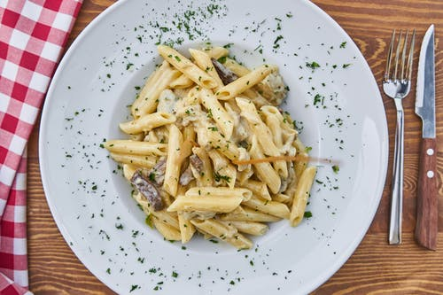

Inicio
Recetas Con Pasta


Recetas Con Verduras

|
Inicio |
 | Recetas Con Pasta |
|
|
Recetas Con Verduras |
|
Bienvenidos a mi página de Recetas¡Hola! Mi nombre es Pablo y os presento mi nueva página web. En esta página web quiero plasmar todo lo que me inspira, todo lo que me apasiona que me gusta hacer. Recetas maravillosas, comidas espectaculares, recetas mias o recetas que me mandéis vosotros mismos. Como primer paseo por la red os quiero presentar a las páginas que me han inspirado desde hace años, las páginas que me animaron a empezar el mio y gracias a sus recetas y consejos me he convertido en un humilde cocinero. En realidad sigo cientos de páginas, estos son los principales que sigo día a día. Su creatividad a la hora de cocinar, sus fotografías o simplemente como lo cuentan hacen que este pegado a la pantalla a todas horas leyéndolos. Bueno el primero del que quiero hablaros es de mi página preferida por la sencillez por sus tipos de recetas y por el diseño de su página. Todos conoceréis el blog de Javi Recetas. Detrás de el se encuentra Javi, un extremeño afincado en Barcelona que nos hace deleitarnos cada día. Es mi modelo a seguir en este mundillo por la sencillez con la que cuenta sus recetas, un tio majo donde los haya. Todo lo relacionado con la cocina extremeña pasa por sus manos, además de muchas recetas muy interesantes y exóticas. Ojala que esta nueva página web, que inicio con mucha ilusión, crezca poco a poco y cuente con vuestro apollo. |